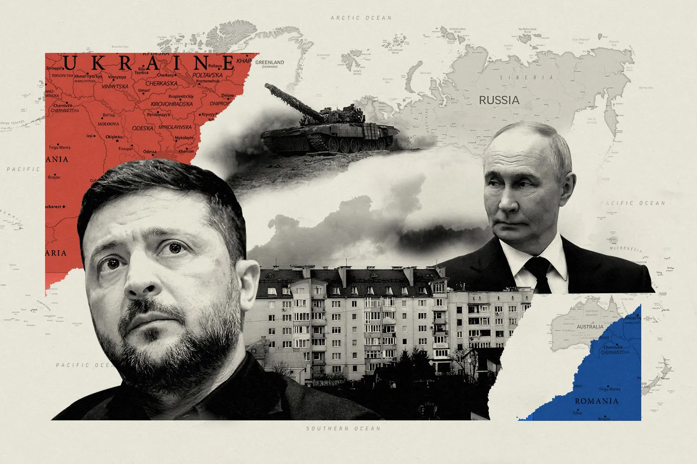
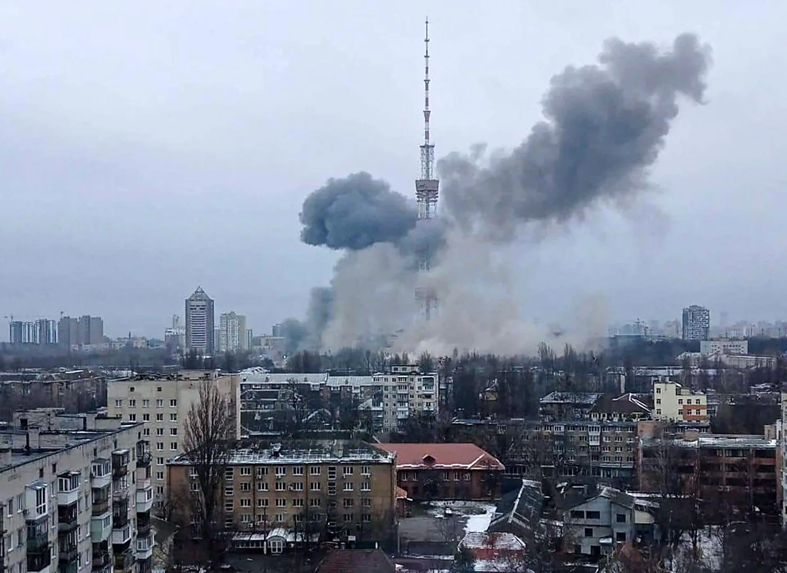
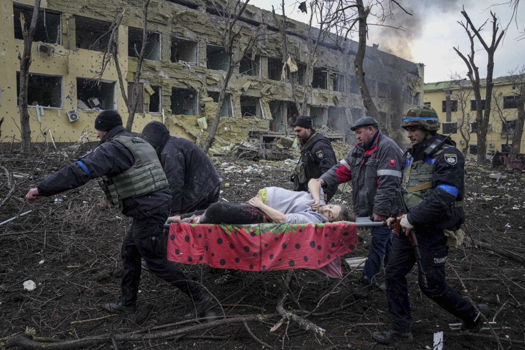
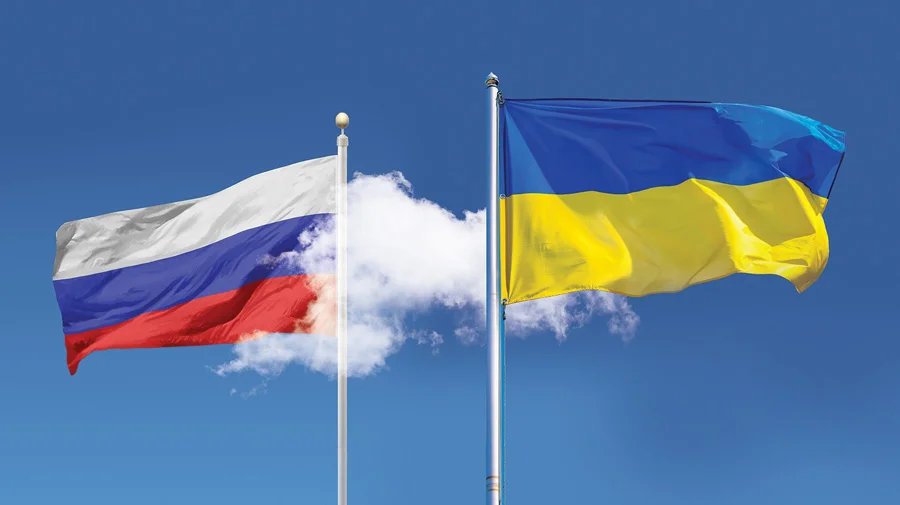

Russia-Ukrainian War
An ongoing and protracted conflict that began in February 2014, escalating into a full-scale invasion of Ukraine by Russia in February 2022.
Conflict Background (2014–2021)
The conflict originated in early 2014, following the Revolution of Dignity (Euromaidan) in Ukraine. Protests erupted when Ukrainian President Viktor Yanukovych suspended preparations for an association agreement with the European Union in favor of closer ties with Russia. After Yanukovych was ousted in February 2014, pro-Russian unrest broke out in eastern and southern Ukraine.
In March 2014, Russian troops disguised as "little green men" covertly invaded and annexed the Crimean Peninsula. Shortly after, Russian-backed separatists declared the independence of the Donetsk and Luhansk People's Republics in the Donbas region, sparking the War in Donbas.
- Minsk Agreements: Attempts to establish a ceasefire, including Minsk I (2014) and Minsk II (2015), were largely unsuccessful, resulting in a low-intensity, static trench war that lasted for eight years.
- Pre-Invasion Buildup: Throughout 2021 and early 2022, Russia amassed a massive military presence along the Ukrainian border while issuing demands, including a guarantee that Ukraine would never join NATO.
Full-Scale Invasion (Feb 2022)
On February 24, 2022, Russia launched a full-scale invasion of Ukraine, referred to by Russian President Vladimir Putin as a "special military operation." The initial assault targeted the capital, Kyiv, as well as multiple fronts in the south and east.
The Ukrainian Armed Forces heavily resisted the invasion. By April 2022, Russian forces retreated from the Kyiv region following severe logistical failures and heavy casualties. Later that year, successful Ukrainian counteroffensives liberated significant territories in the Kharkiv region and pushed Russian forces out of the city of Kherson.
Intelligence & Image Gallery




Current Situation & Global Impact
As of the current reporting period, the war has devolved into a grueling war of attrition along a heavily fortified, 1,000-kilometer front line. Both militaries are heavily utilizing artillery, advanced drone warfare (UAVs), and electronic warfare.
- Humanitarian Crisis: The invasion caused Europe's largest refugee crisis since World War II, with over 8 million Ukrainians fleeing the country and millions more internally displaced. Tens of thousands of civilians have been killed.
- International Response: The West has imposed historically severe economic sanctions on Russia. A coalition of nations led by the United States and the EU continues to supply Ukraine with significant military aid, including HIMARS, Patriot air defense systems, and F-16 fighter jets.
- Global Security Realignment: The conflict triggered a massive geopolitical shift, prompting Sweden and Finland to join NATO and fundamentally altering global energy and grain markets.